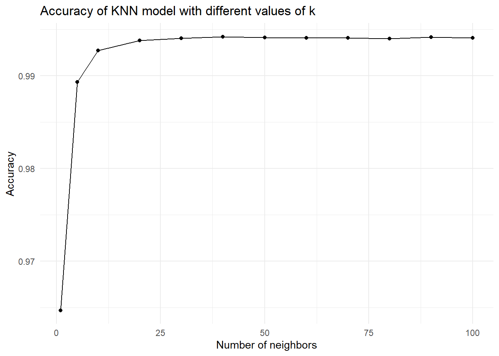
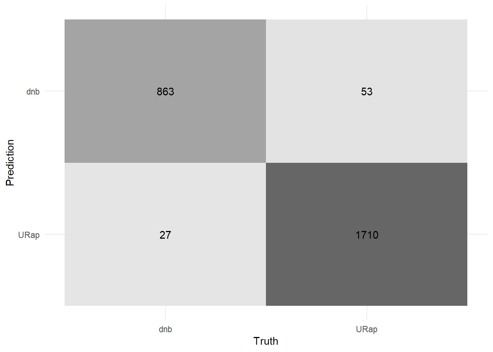
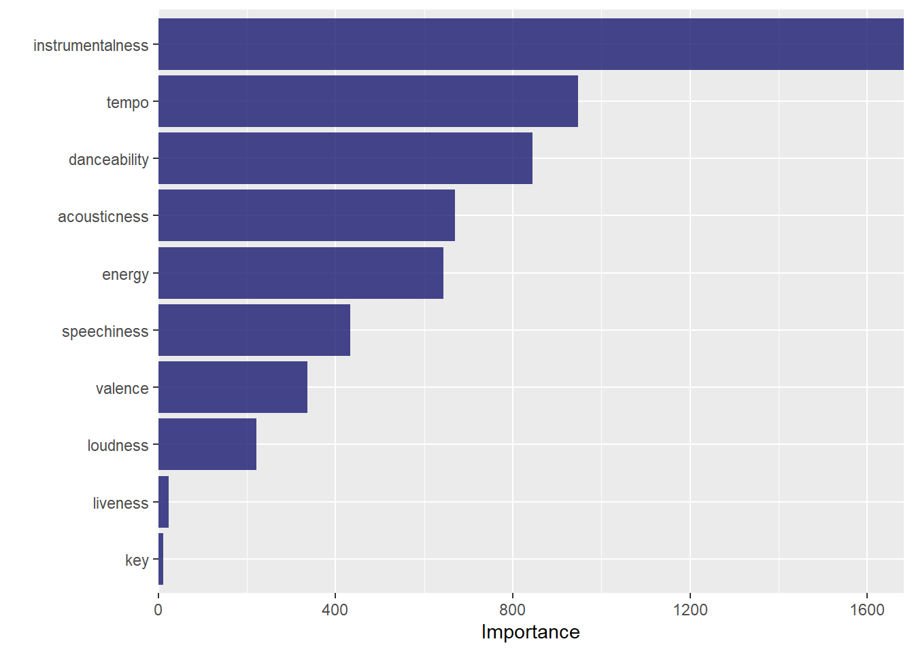
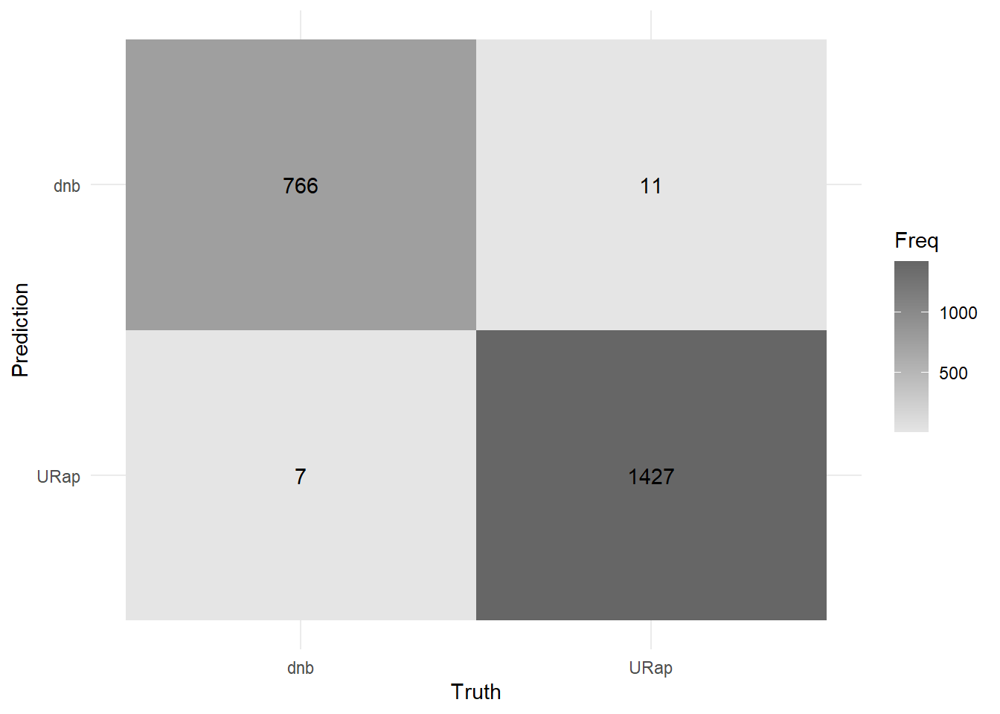
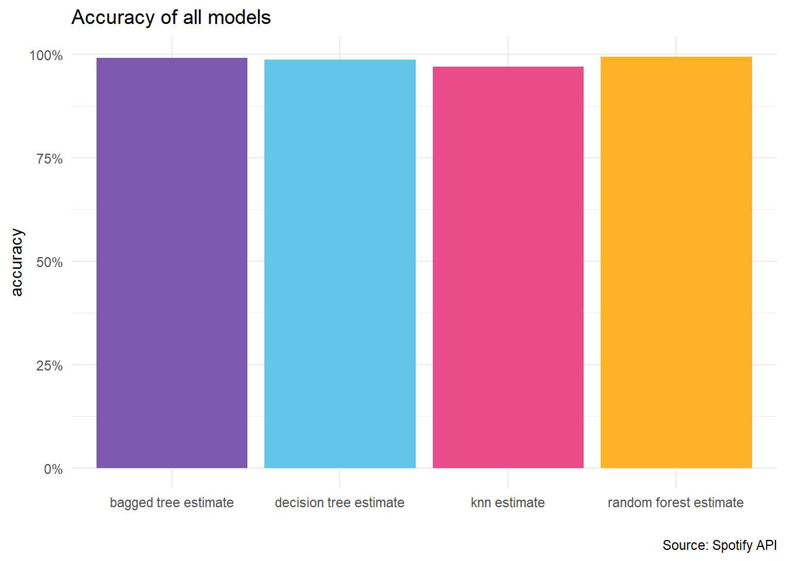

library(spotifyr) #API interaction
library(tidyverse)
library(tidymodels)
library(rsample)
library(recipes)
library(caret)Comparing competing Machine Learning models in classifying Spotify songs
Machine Learning
Exploring 4 competing popular machine learning model to classify a song into either of the two genre. The dataset is from Spotify API and it contains 18 audio features of the song. The dataset is filtered to include only the tracks of the two genres, Underground Rap and dnb. The models are k-nearest neighbor, decision tree, bagged tree and random forest. The models are compared based on their accuracy, sensitivity and specificity. The best model is then selected based on the comparison.
load required libraries
Data Preparation
The data is downloaded from https://www.kaggle.com/datasets/mrmorj/dataset-of-songs-in-spotify.
Data cleaning and feature selection
# read the online spotify data
genre <- read_csv("genres_v2.csv")
playlist <- read_csv("playlists.csv")
#jon the data with id from genre and playlist
spotify_data <- genre %>%
left_join(playlist, by =c("id"= "Playlist"))
# filter the data to include only the tracks of the two genres you'd like to use for the classification task
spotify_data <- spotify_data %>%
filter(genre %in% c("Underground Rap", "dnb")) %>%
#rename underground rap to rap
mutate(genre = ifelse(genre == "Underground Rap", "URap", genre))Data Exploration
# remove columns that you won't be feeding model
spotify <- spotify_data %>% select(song_name, genre, danceability: tempo) %>%
#change genre to factor
mutate(genre = as.factor(genre))
#find the top 10 most danaceable tracks in the dataset
top_20_songs <- spotify %>%
arrange(desc(danceability)) %>%
head(20) %>%
select(song_name, genre, danceability)
# output table with interactivity features
kableExtra:: kable(top_20_songs,
caption = "Top 20 most danceable tracks in the dataset")| song_name | genre | danceability |
|---|---|---|
| POP, LOCK & DROPDEAD | URap | 0.985 |
| LoyaltyRunsDeepInDaLongRun | URap | 0.985 |
| Two Left Feet Flow | URap | 0.984 |
| Hate Your Guts | URap | 0.983 |
| Mugen Woe | URap | 0.982 |
| The 3 | URap | 0.980 |
| Mavericks | URap | 0.979 |
| Technicolor | URap | 0.977 |
| Killmonger | URap | 0.977 |
| Funky Friday | URap | 0.975 |
| Nervous | URap | 0.975 |
| Go to the Sto | URap | 0.975 |
| Bad Bad Bad (feat. Lil Baby) | URap | 0.974 |
| Abraham Lincoln | URap | 0.974 |
| Psycho Pass | URap | 0.973 |
| Who the Fuck Is You | URap | 0.972 |
| Dottin Up | URap | 0.971 |
| Worst Day of My Life | URap | 0.971 |
| Excalibur | URap | 0.970 |
| Sexy | URap | 0.970 |
Visual interpretation of the data
#difference between genres for some of the audio features
#---drop song name, not required for models
spotify <- spotify %>% select(-song_name)
#setup manual colors
colors <- c("#7f58AF", "#64C5EB", "#E84D8A", "#FEB326", "lightblue")
#plot the data
spotify %>%
group_by(genre) %>%
summarise(across(danceability:tempo, mean)) %>%
pivot_longer(cols = danceability:tempo, names_to = "audio_feature", values_to = "mean") %>%
ggplot(aes(x = genre, y = mean, fill = genre)) +
geom_col(position = "dodge") +
facet_wrap(~audio_feature, scales = "free") +
theme_classic() +
xlab("") +
ylab("") +
theme(legend.position = "none") +
scale_fill_manual(values = colors)+
#add caption
labs(caption = paste0(title = "Source: Spotify API")) +
#add title at the top center
ggtitle("Difference between genres for some of the audio features")
1.K-nearest neighbor
The k-nearest neighbors (KNN) method is a non-parametric classification algorithm used for recommendation systems. In the context of a Spotify dataset, the KNN algorithm can be employed to recommend songs or artists to a user based on the preferences of other users with similar listening histories. The algorithm calculates the distances between the target user and other users in the dataset based on their features, such as the artists or genres they have listened to. It then selects the k nearest neighbors, which are the users with the shortest distances to the target user, and recommends songs or artists that are popular among these neighbors.
#load the libraries specific for this model
library(dplyr)
library(ggplot2) #great plots
library(rsample) #data splitting
library(recipes) #data preprocessing
library(skimr) #data exploration
library(tidymodels) #re-entering tidymodel mode
library(kknn) #knn modeling
library(caTools) #for splitting the data#split the data into training and testing set
set.seed(123)
split = sample.split(spotify$genre, SplitRatio = 0.7)
spotify_split = initial_split(spotify)
train = subset(spotify, split == TRUE)
test = subset(spotify, split == FALSE)#specify the recipe
knn_rec <- recipe(genre ~., data = train) %>%
step_dummy(all_nominal(), -all_outcomes(), one_hot = T) %>%
step_normalize(all_numeric(), -all_outcomes())
## knn spec
knn_spec <- nearest_neighbor(neighbors = 5) %>%
set_engine("kknn") %>%
set_mode("classification")
#bake the data
#baked_train <- bake(knn_rec, train)#apply to testing set
#baked_test <- bake(knn_rec, test)Train the model with 5 folds validation . The model is then tuned with grid search to find the best value of k. The model is then fit to the testing set and the performance is evaluated with confusion matrix, precision, recall and f1 score.
# cross validation on the dataset
cv_folds <- vfold_cv(train, v = 5)
# put all together in workflow
knn_workflow <- workflow() %>%
add_recipe(knn_rec) %>%
add_model(knn_spec)
#fit the resamples and carry out validation
knn_res <- knn_workflow %>%
fit_resamples(resamples = cv_folds,
control = control_resamples(save_pred = TRUE))
# find the best value of k
knn_spec_tune <- nearest_neighbor(neighbors = tune()) %>%
set_mode("classification") %>%
set_engine("kknn")
# define a new workflow
wf_knn_tune <- workflow() %>%
add_model(knn_spec_tune) %>%
add_recipe(knn_rec)
# tune the best model with grid search
fit_knn_cv <- wf_knn_tune %>%
tune_grid(cv_folds, grid = data.frame(neighbors = c(1, 5, seq(10, 100, 10))))
#plot the fit knn cv with changing value of neighbours
fit_knn_cv %>% collect_metrics() %>%
filter(.metric == "roc_auc") %>%
ggplot(aes(x = neighbors, y = mean)) +
geom_point() +
geom_line() +
labs(title = "Accuracy of KNN model with different values of k",
x = "Number of neighbors",
y = "Accuracy") +
theme_minimal()
# check the performance with collect_metrics
fit_knn_cv %>% collect_metrics()# A tibble: 36 × 7
neighbors .metric .estimator mean n std_err .config
<dbl> <chr> <chr> <dbl> <int> <dbl> <chr>
1 1 accuracy binary 0.965 5 0.00170 Preprocessor1_Model01
2 1 brier_class binary 0.0351 5 0.00170 Preprocessor1_Model01
3 1 roc_auc binary 0.965 5 0.00309 Preprocessor1_Model01
4 5 accuracy binary 0.968 5 0.00176 Preprocessor1_Model02
5 5 brier_class binary 0.0258 5 0.00118 Preprocessor1_Model02
6 5 roc_auc binary 0.989 5 0.00111 Preprocessor1_Model02
7 10 accuracy binary 0.968 5 0.000903 Preprocessor1_Model03
8 10 brier_class binary 0.0247 5 0.000804 Preprocessor1_Model03
9 10 roc_auc binary 0.993 5 0.000952 Preprocessor1_Model03
10 20 accuracy binary 0.967 5 0.00105 Preprocessor1_Model04
# ℹ 26 more rows# create a final workflow
final_wf <- wf_knn_tune %>%
finalize_workflow(select_best(fit_knn_cv, metric= "accuracy"))
# fit the final model
final_fit <- final_wf %>% fit(data = train)
#predict to testing set
spotify_pred <- final_fit %>% predict(new_data = test)
# Write over 'final_fit' with this last_fit() approach
final_fit <- final_wf %>% last_fit(spotify_split)
# Collect metrics on the test data!final_fit %>% collect_metrics()# A tibble: 3 × 4
.metric .estimator .estimate .config
<chr> <chr> <dbl> <chr>
1 accuracy binary 0.968 Preprocessor1_Model1
2 roc_auc binary 0.992 Preprocessor1_Model1
3 brier_class binary 0.0237 Preprocessor1_Model1#bind genre from test data to the predicted data
bind_test_pred <- spotify_pred %>% bind_cols(test)
#plot the confusion matrix
bind_test_pred %>%
conf_mat(truth = genre, estimate = .pred_class) %>%
autoplot(type = "heatmap") +
theme_minimal()+
#remove legend
theme(legend.position = "none")
#calculate precision, recall and f1 score
knn_estimate <- bind_test_pred %>%
conf_mat(truth = genre, estimate = .pred_class) %>%
summary() %>%
head(4) %>%
#rename .estimate to knn estimate
rename("knn estimate" = .estimate)2.Decision tree
Decision trees uses CART algorithm to split the data into two or more homogeneous sets. The algorithm uses the Gini index to create the splits. The model is then tuned with grid search to find the best hyperparameters. The model is then fit to the testing set and the performance is evaluated with confusion matrix, precision, recall and f1 score, as for knn model.
# load the packages for decision trees
library(MASS)
library(doParallel)
library(vip)
# methods using in class
genre_split <- initial_split(spotify)
genre_train <- training(genre_split)
genre_test <- testing(genre_split)##Preprocess the data
genre_rec <- recipe(genre ~., data = genre_train) %>%
step_dummy(all_nominal(), -all_outcomes(), one_hot = TRUE) %>%
step_normalize(all_numeric(), -all_outcomes())
#new spec, tell the model that we are tuning hypermeter
tree_spec_tune <- decision_tree(
cost_complexity = tune(),
tree_depth = tune(),
min_n = tune()) %>%
set_engine("rpart") %>%
set_mode("classification")Use grid search to find the best hyperparameters and train on folded training set.
# grid search the hyperparameters tuning
tree_grid <- grid_regular(cost_complexity(), tree_depth(), min_n(), levels = 5)
#set up k-fold cv and use the model on this data
genre_cv = genre_train %>% vfold_cv(v = 10)
doParallel::registerDoParallel() #build trees in parallel
# setup the grid search
tree_rs <- tune_grid(tree_spec_tune, genre ~.,
resamples = genre_cv,
grid = tree_grid,
metrics = metric_set(accuracy))Use the workflow to finalize the model and also fit on the training set, and predicting on the test set.
#finalize the model that is cross validate and hyperparameter is tuned
final_tree <- finalize_model(tree_spec_tune, select_best(tree_rs))
#similar functions here.
final_tree_fit <- fit(final_tree, genre~., data = genre_train)
#last_fit() fits on training data (like fit()), but then also evaluates on the test data.
final_tree_result <- last_fit(final_tree, genre~., genre_split)
final_tree_result$.predictions[[1]]
# A tibble: 2,211 × 6
.pred_dnb .pred_URap .row .pred_class genre .config
<dbl> <dbl> <int> <fct> <fct> <chr>
1 0 1 2 URap URap Preprocessor1_Model1
2 0 1 3 URap URap Preprocessor1_Model1
3 0 1 4 URap URap Preprocessor1_Model1
4 0.00157 0.998 6 URap URap Preprocessor1_Model1
5 0 1 7 URap URap Preprocessor1_Model1
6 0.00157 0.998 8 URap URap Preprocessor1_Model1
7 0 1 14 URap URap Preprocessor1_Model1
8 0.00157 0.998 16 URap URap Preprocessor1_Model1
9 0.00157 0.998 17 URap URap Preprocessor1_Model1
10 0.00157 0.998 20 URap URap Preprocessor1_Model1
# ℹ 2,201 more rows#visualize the model
final_tree_fit %>%
vip(geom = "col", aesthetics = list(fill = "midnightblue", alpha = 0.8)) +
scale_y_continuous(expand = c(0,0))
# how accurate is this model on the test data?
final_tree_result %>% collect_metrics()# A tibble: 3 × 4
.metric .estimator .estimate .config
<chr> <chr> <dbl> <chr>
1 accuracy binary 0.983 Preprocessor1_Model1
2 roc_auc binary 0.982 Preprocessor1_Model1
3 brier_class binary 0.0166 Preprocessor1_Model1#plot the confusion matrix
final_tree_result %>%
collect_predictions() %>%
conf_mat(truth = genre, estimate = .pred_class) %>%
autoplot(type = "heatmap") +
theme_minimal()+
theme(legend.position = "none")#plot precision, recall and f1 score
dt_estimate <- final_tree_result %>%
collect_predictions() %>%
conf_mat(truth = genre, estimate = .pred_class) %>%
summary() %>%
head(4) %>%
#rename .estimate to deicsion tree estimate
rename("decision tree estimate" = .estimate)3.Bagged tree
Bagging is a method of ensemble learning that combines the predictions of multiple models to improve the overall performance. It is different from two previous model in the sense that it is collection of ML models. It works by training multiple models on different subsets of the training data and then combining their predictions to make a final prediction. The bagged tree uses decision trees as the base model. The model is then tuned with grid search to find the best hyperparameters. The model is then fit to the testing set and the performance is evaluated with confusion matrix, precision, recall and f1 score, as for knn model and the decision tree model.
# Helper packages
library(doParallel) # for parallel backend to foreach
library(foreach) # for parallel processing with for loops
library(caret) # for general model fitting
library(rpart) # for fitting decision trees
library(ipred) # for bagging
library(baguette) # for bagging
library(tidymodels) # Assuming you have tidymodels installed
# Methods using in class
genre_split <- initial_split(spotify)
genre_train <- training(genre_split)
genre_test <- testing(genre_split)
## Preprocess the data
genre_rec <- recipe(genre ~ ., data = genre_train) %>%
step_dummy(all_nominal(), -all_outcomes(), one_hot = TRUE) %>%
step_normalize(all_numeric(), -all_outcomes(),)
# instatntiate bag model
bag_model <- bag_tree() %>%
set_engine("rpart", times = 100) %>%
set_mode("classification")
# create a workflow
bag_workflow <- workflow() %>%
add_model(bag_model) %>%
add_recipe(genre_rec)##folds the data for validation set
genre_cv = genre_train %>% vfold_cv(v = 10)
# use tune grid to tune the model
bag_tune <- tune_grid(bag_workflow,
resamples = genre_cv,
grid = 10)
# collect metrices
bag_tune %>% collect_metrics()# A tibble: 3 × 6
.metric .estimator mean n std_err .config
<chr> <chr> <dbl> <int> <dbl> <chr>
1 accuracy binary 0.991 10 0.00159 Preprocessor1_Model1
2 brier_class binary 0.00833 10 0.00112 Preprocessor1_Model1
3 roc_auc binary 0.998 10 0.000355 Preprocessor1_Model1#finalize the workflow
bag_best = show_best(bag_tune, n = 1, metric = "roc_auc")
#fit the model
finalize_bag <- finalize_workflow(bag_workflow, select_best(bag_tune, metric = "roc_auc" ))
# fit the finalized model
bag_fit <- finalize_bag %>% fit(genre_train)
# predict the model on test
bag_pred <- bag_fit %>% predict(genre_test) %>%
bind_cols(genre_test)
#predict the model with probaility values
bag_pred_prob <- bag_fit %>% predict(genre_test, type = "prob") %>%
bind_cols(genre_test)
#model metrics and evaluation
accuracy(bag_pred, truth = genre, estimate = .pred_class)# A tibble: 1 × 3
.metric .estimator .estimate
<chr> <chr> <dbl>
1 accuracy binary 0.992#visualize the model
bag_pred %>%
conf_mat(truth = genre, estimate = .pred_class) %>%
autoplot(type = "heatmap") +
theme_minimal()
#remove legendtheme(legend.position = "none")List of 1
$ legend.position: chr "none"
- attr(*, "class")= chr [1:2] "theme" "gg"
- attr(*, "complete")= logi FALSE
- attr(*, "validate")= logi TRUE#plot precision, recall and f1 score
bag_estimate <- bag_pred %>%
conf_mat(truth = genre, estimate = .pred_class) %>%
summary() %>%
head(4) %>%
#rename .estimate to bagged tree estimate
rename("bagged tree estimate" = .estimate)4.Random Forest
Random forest is a popular ensemble learning method that combines the predictions of multiple decision trees to improve the overall performance. It is different from bagged tree in the sense that it uses a collection of decision trees as the base model, stochastically chosing number of columns too in training. That is not seen in general bagging model. The model is then tuned with grid search to find the best hyperparameters.
# random forest with R
library(ranger) # for random forest
# methods using in class
genre_split <- initial_split(spotify)
genre_train <- training(genre_split)
genre_test <- testing(genre_split)
# fold the data for validation set
cv_folds = vfold_cv(genre_train, v = 5)
# create a previous recipe
genre_recipe <- recipe(genre ~., data = genre_train) %>%
step_dummy(all_nominal(), -all_outcomes(), one_hot = TRUE) %>%
step_normalize(all_numeric(), -all_outcomes())
# instantiate model
rf_model <- rand_forest(mtry = tune(), trees = tune()) %>%
set_engine("ranger") %>%
set_mode("classification")
# create a workflow
rf_workflow <- workflow() %>%
add_model(rf_model) %>%
add_recipe(genre_recipe)
# use tune grid to tune the model
rf_tune <- tune_grid(
rf_workflow,
resamples = cv_folds,
grid = 10)
# collect metrices
rf_tune %>% collect_metrics()# A tibble: 30 × 8
mtry trees .metric .estimator mean n std_err .config
<int> <int> <chr> <chr> <dbl> <int> <dbl> <chr>
1 10 1748 accuracy binary 0.990 5 0.00121 Preprocessor1_Mod…
2 10 1748 brier_class binary 0.00755 5 0.000711 Preprocessor1_Mod…
3 10 1748 roc_auc binary 0.999 5 0.000150 Preprocessor1_Mod…
4 7 69 accuracy binary 0.993 5 0.00103 Preprocessor1_Mod…
5 7 69 brier_class binary 0.00666 5 0.000590 Preprocessor1_Mod…
6 7 69 roc_auc binary 1.00 5 0.000167 Preprocessor1_Mod…
7 5 1242 accuracy binary 0.993 5 0.000942 Preprocessor1_Mod…
8 5 1242 brier_class binary 0.00664 5 0.000575 Preprocessor1_Mod…
9 5 1242 roc_auc binary 1.00 5 0.0000860 Preprocessor1_Mod…
10 6 464 accuracy binary 0.993 5 0.000840 Preprocessor1_Mod…
# ℹ 20 more rows#finalize workflow
rf_best = show_best(rf_tune, n = 1, metric = "roc_auc")
# finalize the model
final_rand_forest <- finalize_workflow(rf_workflow, select_best(rf_tune, metric = "roc_auc" ))
#use this to predict the on test set
final_rf_fit <- final_rand_forest %>% fit(genre_train)
# predict the model on test
final_rf_pred <- final_rf_fit %>% predict(genre_test) %>%
bind_cols(genre_test)
#model metrics and evaluation
accuracy(final_rf_pred, truth = genre, estimate = .pred_class)# A tibble: 1 × 3
.metric .estimator .estimate
<chr> <chr> <dbl>
1 accuracy binary 0.993#visualize the model
final_rf_pred %>%
conf_mat(truth = genre, estimate = .pred_class) %>%
autoplot(type = "heatmap") +
theme_minimal()+
#remove legend
theme(legend.position = "none")#plot precision, recall and f1 score
rf_estimate <- final_rf_pred %>%
conf_mat(truth = genre, estimate = .pred_class) %>%
summary() %>%
head(4) %>%
#rename .estimate to random forest estimate
rename("random forest estimate" = .estimate)Model Comparison
#Compare the accuracy of all models and create a dataframe
#bind all the estimates using left join
estimate_table <- knn_estimate %>%
left_join(dt_estimate) %>%
left_join(bag_estimate) %>%
left_join(rf_estimate)
estimate_table# A tibble: 4 × 6
.metric .estimator `knn estimate` `decision tree estimate`
<chr> <chr> <dbl> <dbl>
1 accuracy binary 0.970 0.983
2 kap binary 0.933 0.963
3 sens binary 0.970 0.976
4 spec binary 0.970 0.987
# ℹ 2 more variables: `bagged tree estimate` <dbl>,
# `random forest estimate` <dbl>## plot the histogram of the accuracy of all models
estimate_table %>%
pivot_longer(cols = c("knn estimate", "decision tree estimate", "bagged tree estimate", "random forest estimate"), names_to = "model", values_to = "accuracy") %>%
ggplot(aes(x = model, y = accuracy, fill = model)) +
geom_col(position = "dodge") +
theme_minimal() +
xlab("") +
ylab("accuracy") +
theme(legend.position = "none") +
labs(caption = paste0(title = "Source: Spotify API")) +
ggtitle("Accuracy of all models") +
#transform y axis to percentage multiplying by 100
scale_y_continuous(labels = scales::percent)+
#fill manual colors
scale_fill_manual(values = colors)
Conclusion
Of the Four models tested, all models has excellent accuracy, sensitivity and specificity. Most models were able to classify the models as either of the two genre. If we are interested even in fractional measure in regards to accuracy, then random forest model is the best model to use. The confusion matrix of this model shows that it only missed 8 observation where it classified the genre as URap when it was actually dnb. And, the model also missed 8 observation where it classified the genre as dnb when it was actually URap. With such excellent precision and recall, random forest model works best for this dataset.